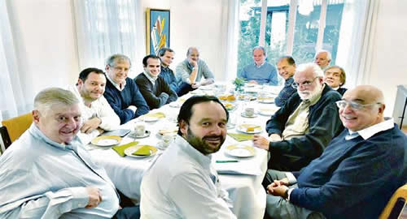

Real Chubut - Agencia de Noticias


Sturzenegger negocia ampliar swap chino en hasta u$s5.000 M

• A MEDIADOS DE 2017 AMBAS ENTIDADES RATIFICARON LA VIGENCIA DEL ACUERDO FIRMADO EN 2014
Con el objetivo de reforzar la posición de las reservas del BCRA tendrá un encuentro con su par chino este fin de semana. Mientras tanto, convoca a economistas para explicarles el acuerdo con el Fondo.
El presidente del Banco Central, Federico Sturzenegger, avanzará este fin de semana en la ampliación del swap de divisas con el Banco Popular de China (PBoC)en hasta un 50%. De modo que el BCRA apunta a elevar la línea con su par chino en aproximadamente u$s5.000 millones. En la actualidad, el swap es equivalente a 70.000 millones de yenes que al momento de pactarse representaban unos u$s10.400 millones. Hoy esa cantidad equivaldría a unos u$s10.900 millones. Según fuentes oficiales, la idea es negociar una ampliación de entre 30%y 50%. Si bien el proceso negociador ya comenzó semanas atrás, con el envío de sendas cartas planteando el tema al PBoC, será el próximo fin de semana cuando el jefe del BCRA tendrá la oportunidad de ir cerrando la negociación con su par chino, Zhou Xiaochuan. Ambos se encontrarán, en Basilea (Suiza), con motivo de la Asamblea Anual del BIS. Pero Sturzenegger permanecerá unos días más ya que participará del FSB (Financial Stability Board).
Cabe recordar que el swap acordado originalmente en 2014 fue renovado a mediados de 2017 por el mismo monto. Según el acuerdo, el BCRA tiene disponible una línea en yenes que incorpora a su stock de reservas internacionales y que no le implican ningún costo. En el caso de que active el swap, o sea, quiera cambiar los yenes a dólares, en ese caso empieza a correr el taxi de los intereses.
El objetivo que persigue el BCRA es incrementar el "colchón" de las reservas para tener mayor capacidad de intervención en el mercado cambiario. Si bien nada está cerrado, ya que empezó la negociación formal, la idea original es ir hasta un 50% más del monto actual. Pero todo es negociable y está en cabeza del propio Sturzenegger. Claro que para los economistas más ortodoxos este swap no debería incluirse en las reservas netas del BCRA, porque lo consideran "papelitos". Pero lo cierto es que están y permiten al Central mostrar hoy un stock de reservas brutas de u$s50.000 millones.
Mientras tanto, la cúpula del BCRA intensificó sus encuentros con economistas referentes del mercado local con el fin de profundizar las explicaciones sobre el acuerdo con el FMI. En tal sentido, y como adelantó este diario, en la tarde del viernes pasado, un grupo reducido de economistas entre los que se destacan Miguel Kiguel, Eduardo Levy Yeyati, Daniel Artana, Daniel Marx, entre otros, fueron al Central a reunirse con Sturzenegger. Pero el plato fuerte fue el sábado por la mañana, en la propia morada del titular del BCRA. Allí, como si fuera el templo Jedi, Sturzenegger y la mesa chica del Central (los vicepresidentes Lucas Llach y Demian Reidel, el gerente general Mariano Flores Vidal, el economista jefe Andrés Neumeyer y el gerente principal de Estrategia de Política Monetaria Mauro Alessandro) compartieron un desayuno por más de dos horas con Miguel Broda, Miguel Bein, José Machinea, Jorge Vasconcelos, Gabriel Rubinstein, Juan Carlos De Pablo y Julio Piekarz.
La voz cantante la llevó Flores Vidal, quien por haber participado de las negociaciones con el Fondo, abrió el fuego brindando mayores detalles del proceso negociador que culminará con la firma del Memorándum o Carta de Entendimiento. Hubo un breve intercambio sobre algunos tópicos de la futura Carta y luego la cúpula del BCRA allí reunida bajó línea sobre dos futuros ejes de su gestión: el desarme de las Lebac y el mantenimiento del sesgo contractivo de la política monetaria.
"Una de las cosas que quedaron claras es que no piensan bajar la tasa de interés (hoy en el 40% anual) por un buen tiempo. El BCRA dice que hasta que no baje la inflación la tasa no se toca", explicó una fuente cercana al encuentro. Sobre el desarme de las Lebac, en el desayuno se destacó que desde la última licitación mediante la recompra de Letras se redujo el próximo vencimiento ya en $100.000 millones, quedando al viernes en $555.000 millones.
Lo que más entusiasmó a los economistas invitados fue la decisión de ya interrumpir el financiamiento del BCRA al Tesoro. De modo que los $70.100 millones que aún le quedarían de margen al Central para girar al Tesoro, de los $140.000 millones pactados en el Presupuesto, no los transferirá. Al día de hoy el BCRA giró por Adelantos Transitorios $69.900 millones al Tesoro. Si bien habrá un proyecto de ley para corregir la Carta Orgánica del BCRA y suspender el financiamiento al Tesoro, en realidad ya "le cortaron el descubierto" al Palacio de Hacienda. Esto es lo que más excitó a los invitados, quienes no dejaron de plantear dudas operativas sobre cómo funcionará el esquema de ahora en adelante.
En cuanto al tema cambiario, una vez caída la muralla de los u$s5.000 millones a $25, los funcionarios reafirmaron que el BCRA dejará de comprar dólares al Tesoro y si bien el régimen será de flotación cambiaria en caso de que se registre algún movimiento "disruptivo" podrá intervenir. O sea, una flotación sucia con excepciones, la llamaron. Sobre el nivel del tipo de cambio sólo hubo susurros. Allí entre medialunas y sándwiches resurgió el tema de la tasa de interés donde se manifestó que dentro del combo negociado fiscal, monetario e institucional, la baja de la tasa llevará su tiempo. Allí los invitados usaron sus celulares, bajo la mesa, para dibujar algunos escenarios de carry trade.
Sobre el desarme de las Lebac quedó claro que todo está en manos del ministro de Finanzas, Luis Caputo, quien deberá captar nuevos fondos (o sea, colocar más deuda) en el mercado local y/o internacional para con los pesos o dólares captados rescatar las Letras Intransferibles dadas al BCRA, quien a su vez usará esos pesos para cancelar sus propias Letras. El hecho de que el mencionado proyecto de ley también incluirá el cambio de valuación de estas Letras del Tesoro (valuadas a precio de mercado cuando no se negocian en ninguno) juega a favor de la transparencia valorada por los invitados a la casa de Sturzenegger.
Si bien la mayoría de los convidados se inclinan por metas de agregados monetarios, el tema del régimen de metas de inflación llegó casi al final. Las metas quedaron en cabeza del Central, quien para ir hacia el 17% anual planteado para diciembre 2019 deberá necesariamente ir reafirmando el apretón monetario porque la revisión del FMI es trimestral y la primera será a fin de junio, ya en medio de los octavos de final del Mundial de Rusia, o sea, sabiendo si Argentina continúa avanzando o no.
Fuente: Ambito